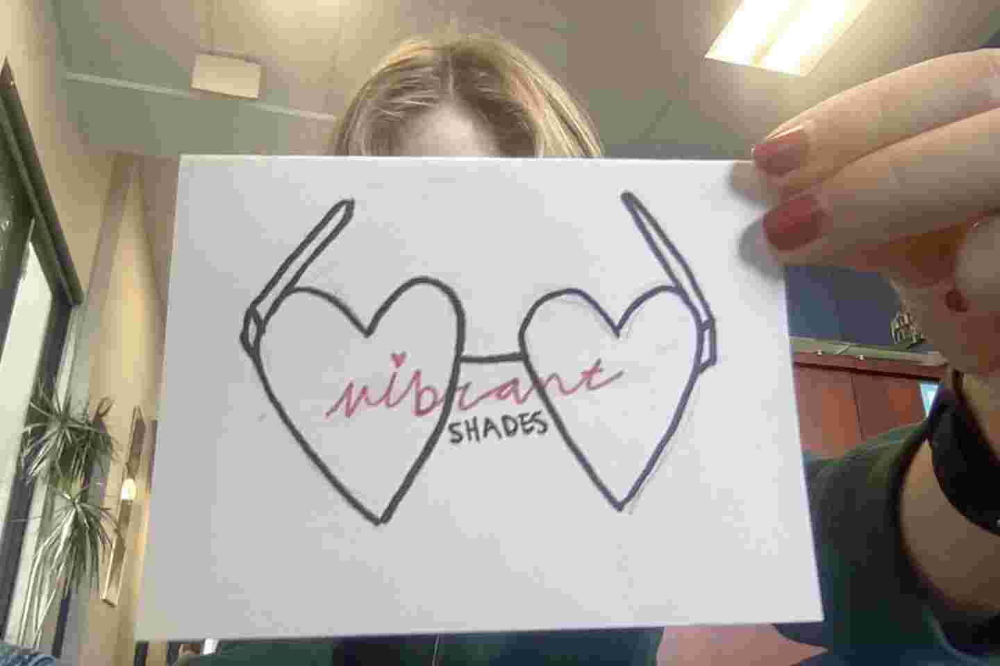

We started by trying to find a prodect to work on. It was in between lotion, phone cases, and beaded sunglasses! When we met with our focus groups we got some negitive feed back about the phone cases. One group loved the lotion idea while the other group disliked the lotion idea. Both of the groups thought the beaded sunglasses were cute. We also did some research on the materials for the beaded sunglasses. We found out that we could definitly afford them! So we decided to go with the sunglasses!

When we were started to create the logo we wanted it to look bold but aesthetic. So we decided to put heart sunglasses for our logo and in the middle of of the glasses there is the words vibrant with pink marker in cursive. Under that we put the word shades in black bold marker. Then we had to come up with a name. This part was difficult. We wanted to name is Sunny Shades but then we relized that "Sunny Shades" was aready a thing. So then we were going for a name that was more vibrant. Which is why we named it Vibrant Shades!
The non-decoritive beads did not come yet so we did use the decorative beads. We used the pearl beads and the sunflowers beads in the corner of the classes. And thanks to Indi this is what it turned out as!